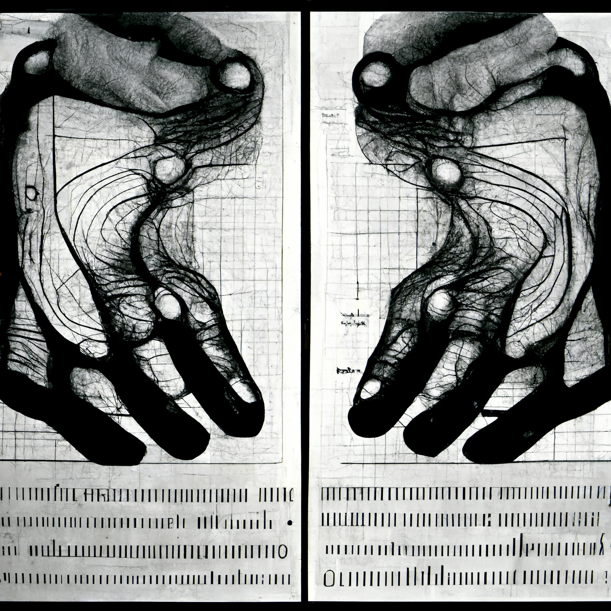

祝祭と霽れ
Mirrored Hands
香取 賢佑
あなたは自身の身体を左右対称だと思っていますか？
普段何気無く左右対称だと思いがちですが、実は人間の体は組成から動作まで左右対称なところはありません。
このアート作品は、人間の身体の左右非対称性をテーマにしたものです。右手の動きをカメラで計測し、その動きをEMSを用いて左手に入力することで、実は意識的には不可能な身体の左右対称な操作を再現することができます。
我々の無意識的な予想に反して、実は普段左右非対称な動きをしているという事実をこの作品は突きつけます。
普段何気無く左右対称だと思いがちですが、実は人間の体は組成から動作まで左右対称なところはありません。
このアート作品は、人間の身体の左右非対称性をテーマにしたものです。右手の動きをカメラで計測し、その動きをEMSを用いて左手に入力することで、実は意識的には不可能な身体の左右対称な操作を再現することができます。
我々の無意識的な予想に反して、実は普段左右非対称な動きをしているという事実をこの作品は突きつけます。